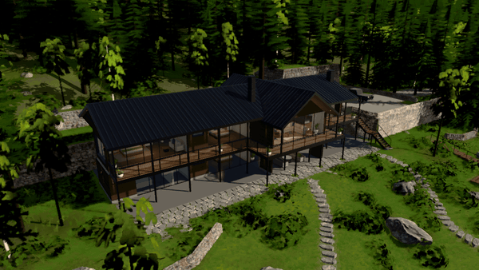

Two plans, one house
An experiment: two floor plans as images, turned into a house you can orbit, walk through and watch at any hour of the day, right in the browser.

Walk the houseOrbit it, double-click a floor to walk in, drag the time of day.
Build manual11 steps, ground to roof.
First draftWhere every wall was measured.
Where it started


The first load takes up to half a minute: it downloads textures, sky and trees. After that it runs smoothly. Best on a computer; it works on a phone too.
Not in the plans, so invented: floor heights, roof pitch, the stair, the furniture and the land around the house. The 3D pages are in Spanish.
How it was made: the repo and its README.